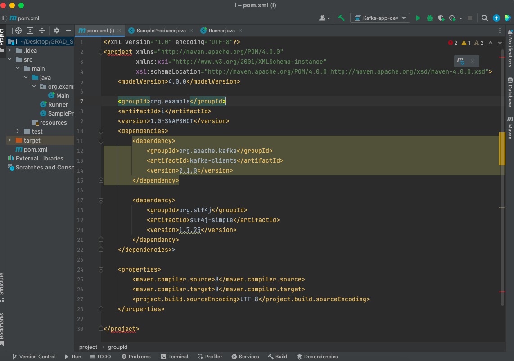
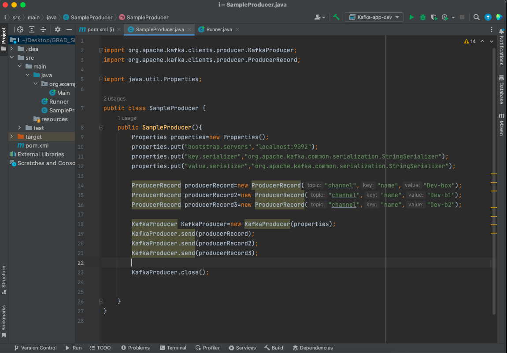
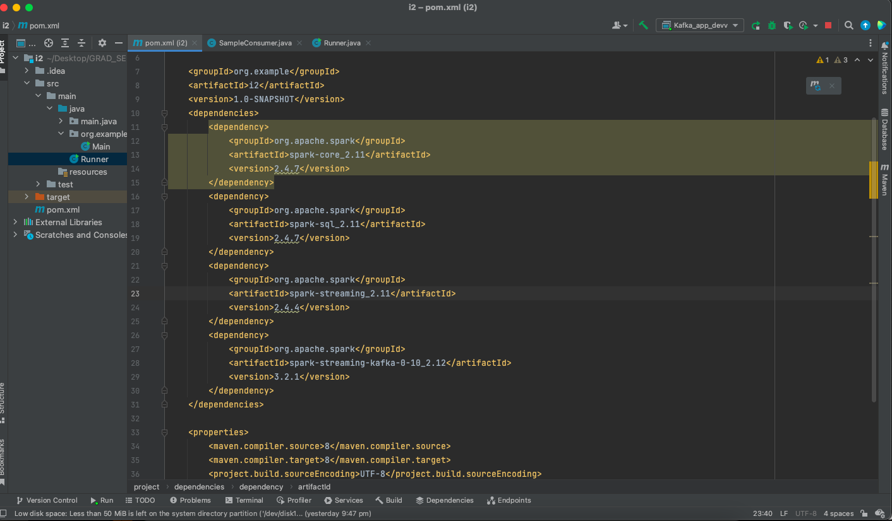
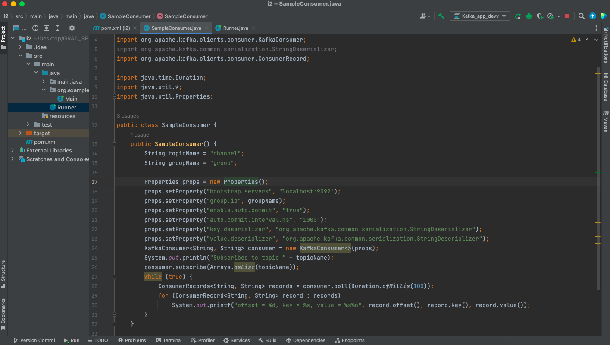

Writing Producer and Consumer code
This topic provides us with the details of the the producer and consumer working.
We will have the Kafka server running in AWS or on our local host . Then we will write Kafka Producer application then this will create and send the messages to the Kafka Broker. There will be a Kafka consumer provided during the installation of Kafka. These will consume the messages sent by the Kafka Producer.
Now we are ready to write the Kafka Producer application. Wait!!! Before that make sure you have Kafka Server, Zookeeper running in the background.
Create a new project in your IDE. We use Maven as a package manager and then select any JDK with the latest version. 
In your pom.xml write down the dependencies shown above. Then next we will be writng the SampleProducer application.
 This is the sample producer code for writing messages from Kafka producer to the broker.
Lets go to the Kafka Consumer Application
 This is the pom.xml file that have to be written in Consumer Application. Then next we will be writng the SampleProducer application. This is the sample consumer file for reading or consuming messages written by the producer.